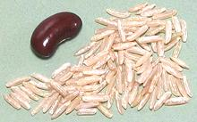

SAFARI
Users
- General & History
- Forms & Processing - preparing rice for market.
- Starches - a major factor in cooking properties.
- Health & Nutrition
RICE by REGION
- Africa
- Americas
- Asia South (India, Pakistan, Sri Lanka, Himalayas)
- Asia, Southeast
- China
- Europe (Portugal, Spain, Italy)
- Japan
- Persia / Iran
See also:
- Buying, Cooking & Storing Rice
- Links - to sites dealing with rice.
General & History
Domesticated Asian (as distinct from African) rice derives from Asian wild red rice, Oryza rufipogon, which still exists and is a difficult to eradicate pest in commercial crops. This wild rice can still crossbreed with domesticated rice (Oryza sativa) providing any number of intentional and unintentional hybrids. Oryza rufipogon is thought native to India and Southeast Asia, but the oldest accepted evidence of rice cultivation is from China, about 5000 BCE. Photo by Augustus Binu distributed under license Creative Commons Attribution-ShareAlike v3.0 Unported Attribution required.
African rice (Oryza glaberrima), also known as "upland rice", can withstand drier conditions and is resistant to pests found in Africa. Domesticated versions are closer to wild than Asian rice, yields are much lower and harvesting is more difficult. It has been isolated from Asian rice for so long it is extremely difficult to hybridize the two, though that has recently been accomplished. Hybrids are called NERICA (New Rice for Africa) and are now being widely planted for improved yields. African rice is grown mainly in humid parts of West Africa.
Arab traders brought Asian rice from India to the Near East, and then on to Spain. From Spain it was taken to Italy, but the rest of Europe is unsuitable for rice cultivation.
Rice came to North America in colonial days. It is said that a ship out of Madagascar was damaged in a storm and put into Charleston, South Carolina for repairs. The captain thanked his hosts with a bag of Patna type rice, which was successfully planted using the rice growing skills of slaves from West Africa. From this grew a major rice cultivation and exporting business. Unfortunately for South Carolina, its growing practices were very much dependant on slave labor, and disregard for health of the slaves, so rice production declined rapidly after the Civil war. Today, rice is grown mainly in Louisiana, Arkansas, and Texas, but any relationship to the original Carolina rice is highly questionable. Real Carolina Rice has been revived by a boutique grower.
While rice consumption is relatively low in North America, it has been rising to the point that around 75% of households now serve rice at least once a week, up from around 45% in the mid 70s. This large increase is partially due to immigration from rice eating cultures who not only consume rice themselves but influence the diversity of what other Americans eat.
Rice has, until recently, been little exported, most being consumed in the area where it is grown. Most rice growing cultures don't even like the types of rice that come from other regions. The exception has been the United States, which started exporting quantities of rice in colonial days. Today several other countries are major exporters. Thailand has long been the biggest exporter, but in 2012 it dropped to third due to a Thai government program. The current order by volume is: India (by a very wide margin - 15.5 million metric tons), Vietnam and Thailand (nearly tied), Pakistan, and the United States. In general, exporting countries export the types of rice their own people prefer. The US exports around half it's rice production, mostly long grain to Mexico, the Caribbean and Canada and South America mainly Japanese style rice.
The US exports about 3.6 million US Tons, and imports more than 1.6 million US tons of rice per year (2019). The imports have increased by more than three times over the last decade. This is all Aromatic Rice, Thai Jasmine and Basmati from India and Pakistan. China is currently (2021) dumping surplus government stocks of old medium grain rice to US Puerto Rico at below market prices.
Forms & Processing
Paddy Rice
This is rice as threshed from the grass and includes husk and bran. The final weight of milled white rice is about 68% of it's weight as paddy rice. If the rice is to be parboiled, it is used in this condition. Photo by Judgefloro distributed under license Creative Commons Attribution-ShareAlike v4.0 International.
Brown Rice
 This is rice that has gone through the first step of milling to remove the husks, but the bran coating and germ are still on the grains. Brown rice is more nutritious than white milled rice (fiber, protein, vitamins, minerals and anti-oxidants) and it has a nutty flavor and chewy texture. On the downside, the flavor is less delicate than white rice making it unsuitable for many recipes, cooking time is much longer, and it is far more vulnerable to rancidity. Storage time can be as little as a few months while white rice can store from one year to more than 50 years depending on variety and milling practice.
Cargo Rice
This is a term some manufacturers and countries use for brown rice. Rice is shipped mostly brown, thus "cargo", to countries that do not allow import of milled rice in order to protect their own milling industry. Other countries refuse to ship Cargo Rice in order to protect their milling industry.
White Rice
This is brown rice run through an additional milling process to remove the bran and germ. Most of the rice consumption in all countries is white rice, preferred for its delicate flavor and short cooking time. When white rice first became cheap enough for normal people to buy, the vitamin deficiency disease Beriberi became widespread in regions that lived mostly on rice.
Converted Rice
This is an American form of Parboiled Rice, originated by the company now known a Mars. The original production was to create a more durable, weevil resistant and more nutritious rice with a shorter cooking time as supplies for troops during World War II. After the war it was marketed as "Uncle Ben's®", which became a popular American retail brand. Most rice articles in North America say "converted" rice was invented by Uncle Ben's, but the concept was not, only details of the Huzenlaub process, which was invented in England. The Huzenlaub process takes more complex equipment than the Indian process because it uses vacuum drying at two stages. The brand is now "Ben's Original®". as "Uncle Ben" was considered racist. "Uncle" was a title used in the South to avoid calling a black man "Mr.".
Parboiled Rice
 [Sella rice (India)]
[Sella rice (India)]
In this process the rice is still in the husk when the grains are soaked, steamed (formerly boiled) and then dried. After that it is milled into white rice the usual way, but is somewhat yellow in color. This process drives a good part of the nutrients from the bran coat into the rice body making a white rice with more vitamins, makes the rice more durable during the milling process, and the grains stay more separate with cooking.
This process was originally adopted in India to improve cheaper grades of rice. Parboiled grains stay fluffy and very separate even if the rice it is prepared from would otherwise be stickier. Parboiled rice is now much used as "restaurant rice" because it is less vulnerable to improper cooking and handling. In restaurants serving risotto, it often cooked most of the way, then cooled. To fill orders, it is then finish cooked. It also holds up well in canned and processed foods.
American parboiled rice is processed to a very pale color and cooks
out almost pure white. Indian parboiled rice is often darker, cooking
out with more color and has a little more of a brown rice flavor. The
photo specimens are of Indian Basmati Sela parboiled rice.
"Instant" Rice
[Precooked Rice]
This is rice (usually American long grain) that has been fully cooked
and then dehydrated before packaging. It's easily identified because The
grains are soft, gritty in texture, and many are broken. After "cooking"
for the recommended time of 5 minutes the grains are still a bit dry,
slightly gritty, stiff in the center and a bit mushy on the outside.
Give it 10 minutes and it's mushy all the way through. The fragrance
and flavor are similar to styrofoam. Inferior in nutrition, flavor and
texture, this product is unsuitable for just about any purpose, except
perhaps to accurately reproduce the cuisine of New Jersey during the
Eisenhower administration - but you can microwave it. "Minute Rice" is
a well known brand.
Coated Rice
This is white rice that has been given a coating as a preservative and anti-caking agent. Coating with Talc was once common practice to protect rice on long sea voyages but can now be found only in a few ethnic rice varieties, possibly in South America - it is illegal in the United States. This rice must be clearly labeled as coated and must be thoroughly rinsed before use. Today, rice may be coated with cornstarch, which is edible and need not be labeled, but for most uses should be rinsed off as it will affect the texture.
"No-Rinse" Rice:
[Musenmai rice] This rice has a special coating that looks rather shiny. I have not tried it, in fact I haven't even seen it, but it is reported by experts to be deficient in flavor.
Broken Rice
 The milling process breaks a lot of rice grains, which must be sorted out
from the whole grain rice. US regulations call for no more than 4% broken
grains in commercial rice. Broken rice is sold mostly to food processors,
pet food makers, and beer brewers, but in West Africa and Southeast Asia it
is also a consumer product. It is sometimes called for in rice puddings and
similar recipes. It is quite popular in West Africa because it costs less,
and can be substituted for couscous because of similar size and shape.
Photo by T.K. Naliaka (heavily cropped), distributed under
license Creative Commons
Attribution-ShareAlike v4.0 International, attribution required.
The milling process breaks a lot of rice grains, which must be sorted out
from the whole grain rice. US regulations call for no more than 4% broken
grains in commercial rice. Broken rice is sold mostly to food processors,
pet food makers, and beer brewers, but in West Africa and Southeast Asia it
is also a consumer product. It is sometimes called for in rice puddings and
similar recipes. It is quite popular in West Africa because it costs less,
and can be substituted for couscous because of similar size and shape.
Photo by T.K. Naliaka (heavily cropped), distributed under
license Creative Commons
Attribution-ShareAlike v4.0 International, attribution required.
Puffed Rice
 This product is made by two different processes: "oven puffing", where
the grains are exposed to a very high temperature, and "gun puffing",
where the grains are heated moderately under high pressure. When the
pressure is released the rice puffs up. The two processes provide a
somewhat different product. Puffed rice is very popular in India for
use in sweets and deserts. They use the oven method and fuel the ovens
with burning rubber tires to get a high enough temperature - with a
serious negative impact on health and environment. The photo specimens
are from India, probably oven puffed. American puffed rice (gun puffed)
is a bit lighter, whiter and more consistent.
This product is made by two different processes: "oven puffing", where
the grains are exposed to a very high temperature, and "gun puffing",
where the grains are heated moderately under high pressure. When the
pressure is released the rice puffs up. The two processes provide a
somewhat different product. Puffed rice is very popular in India for
use in sweets and deserts. They use the oven method and fuel the ovens
with burning rubber tires to get a high enough temperature - with a
serious negative impact on health and environment. The photo specimens
are from India, probably oven puffed. American puffed rice (gun puffed)
is a bit lighter, whiter and more consistent.
Beaten Rice
 [Rice Flakes, Pounded Rice; Poha (India); Choora (India, Northeast)]
[Rice Flakes, Pounded Rice; Poha (India); Choora (India, Northeast)]
This product is popular in India. The grains are flattened into flakes
and dried, making a product that cooks very quickly - an attractive
feature in a region where cooking fuel is extremely expensive.
Ground Rice
For this product, white rice is ground to a much coarser degree than is rice flour, similar to Wheat Farina. It is used for porridge like dishes. "Cream of Rice®" is a trademark for Nabisco's ground rice for porridge.
Rice Flour
This flour is generally white rice ground very fine, or it can be ground from puffed rice (easier). It can also be ground from brown rice, but brown rice flour will become rancid much more quickly, just as with whole wheat flour. Rice flour is used in confections, as a thickening agent in sauces, and in industrial processed food.Caution: This flour comes in two varieties, regular rice and glutenous (sweet) rice. They are often used in different ways. In general, you want the regular version, but sauces thickened with sweet rice flour are more resistant to breaking down with heat than those thickened with regular rice flour. Because it varies significantly depending on the type of rice used, it is safest to get a variety of the same ethnicity as the recipes you will be cooking.
Starches in Rice
Starches have a great effect on the cooking properties of rice. The "white" part of the rice grain is nearly all starch. As with other culinary starches, they are composed of two kinds of glucose chains: amylose and amylopectin. The ratio of these two components influences cooking properties.
Rice high in amylose tends to cook into separate, fairly firm grains. It also has a lightly lower GI (glycemic index) than other rice.
Rice high in amylopectin cooks up softer, absorbing more water, and the grains tend to stick to each other. These rices will keep absorbing water and swelling until they become a gel.
Here are the general rules for commonly marketed rice varieties. Relatively small variations in the ratio of amylose to amylopectin can significantly affect cooking properties. There are exceptions to these rules with some special varieties. For instance Thai Sticky Rice, unlike all other common sticky rices, is long grain.
Long Grain:
(indica) Properly cooked, this rice is "fluffy" with very separate grains. This is the predominant rice in India, Southeast Asia and major parts of China, particularly the southern two thirds. It is commonly around 22% amylose, but can be up to 25%.Medium Grain:
(japonica) Properly cooked, this rice also produces rather separate grains, but they adhere to each other, making it easier to pick up lumps of it with the pointy chopsticks used in Japan. It is also good for sushi, and is the predominant rice in Japan and Korea. It is not good for soups or stews, because it continues to swell until it is a gel. It is often wrongly called "short grain". It is usually between 15% and 17% amylose.Short Grain:
(japonica) This type includes varieties known as "glutenous rice" (which contains no gluten), "sticky rice", "waxy rice" and "sweet rice". Most short grain rice cooks up very sticky, and, except in Laos and Issan, Thailand, is used mainly for sweets and deserts, thus the name - the rice itself is no sweeter than any other. The amylose content is always below 15% and can be as low as 2%.
Health & Nutrition
Safety:
There are few risks involved with rice beyond slipping on thrown rice at a wedding (a custom adopted from India). If left out too long (more than a day) cooked rice will sour but not generally become toxic.Here in Los Angeles there was a great rice war between the food safety officials and the Asians. It was over not refrigerating rice cakes (refrigeration ruins them). A compromise was finally worked out so they need not be refrigerated but there is a fixed number of hours they may be out for sale (rice cakes usually include ingredients other than rice in the center).
Nutrition:
Rice is high in carbohydrates, gluten free, very low in fat and sodium and has about the best protein balance of any common grain, with all 8 essential amino acids present in reasonable proportions (somewhat short on lysine though). Brown, red and black rice contain more vitamins, minerals, fiber and antioxidants, as described below. The number of calories in a cup of cooked rice and Glycemic Index depends on type and weight. Here are typical weights and counts.| Per 8oz Cup | ||
|---|---|---|
| Type | Ounces | Calories |
| White Long Grain | 5.6 | 205 |
| Brown Long Grain | 6.9 | 216 |
| White Medium Grain | 6.6 | 242 |
| Brown Medium Grain | 6.9 | 218 |
| White Short Grain | 7.2 | 267 |
Diabetes:
Inconclusive. In March 2012 a Harvard group published a meta-study in medical journal BMJ that found a barely statistically valid association for type 2 diabetes increasing with increasing consumption of white rice.Even EMJ's editors stated "Although the findings of the current study are interesting they have few immediate implications for doctors, patients, or public health services . . . ". That's about the kindest evaluation of the study. Looked at another way, their data showed the increase in diabetes was valid only for Asians, not Westerners - but, basically, it wasn't valid enough to come to any conclusions at all (R6).
This did not stop the media from running with the story with huge and alarming headlines linking white rice consumption to type 2 diabetes, carefully omitting any parts that questioned the validity and relevance of the data.
In any case, long grain rice has a lower GI (glycemic index) than medium and short grain rice.
Arsenic:
(2010) Rice from the US Southern States has been found a bit high in arsenic, probably from fertilization with chicken droppings. You did know chickens and turkeys were (and some may still be) fed arsenic, right? Makes 'em grow faster. Extent of risk is under evaluation by the FDA. California, Thai and Indian rice have normal arsenic levels.Brown Rice:
This form is more nutritious than white rice since the bran layers contain protein, calcium, phosphorus, potassium, B vitamins, fiber and vitamin E (as well as some toxins and "anti-nutrients"), while the white part is mostly just starch. It is also much higher in iron and selenium than white rice, and higher in antioxidants, but not nearly so high as red rice, and that isn't nearly as high as black rice, because the colors come from anthocyanin antioxidants.Beriberi:
When a cheap milling process was developed, rice subsistent people wanted white rice just like rich people had long enjoyed. Unfortunately, this resulted in the debilitating B vitamin deficiency disease beriberi. A nutritional fix was found, but the medical profession was totally hung up on microbial theories of disease back then, so doctors continued to search for "the real cause" long after.Beriberi was a serious problem in the southeast U.S. as well, so the US Food and Drug Administration requires "enrichment" of white rice with niacin, thiamin and iron. This is washed off if you rinse the rice which is why the package says "don't rinse". Recipes say "do rinse" (for better texture) and few of us are so rice subsistent the loss will make a significant difference. More serious is lack of iodine from using kosher salt. Because a few people think they can taste the iodine, all recipes written today demand kosher salt - and they never tell you if their measure is for Morton or Diamond Crystal (by measure, you need about twice as much Diamond Crystal as Morton due to its light texture).
Gluten:
No rice, including "Glutinous Rice" contains any gluten and all are suitable for celiac sufferers. Rice flour is used for baked goods and otherwise as a substitute for wheat flour for the gluten intolerant. Unfortunately, without gluten, it can not make a risen dough bread.Links
- R4 - Koda Farms
- R5 - List of Rice Varieties - Wikipedia
- R6 - Analysis of Invalid Diabetes Study - Weighty Matters.